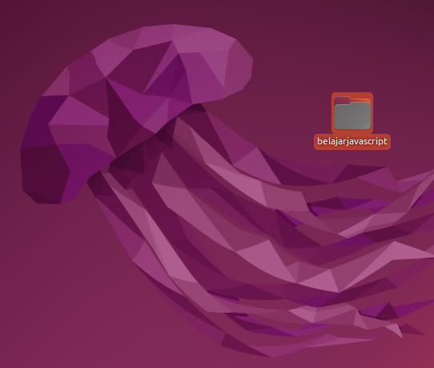
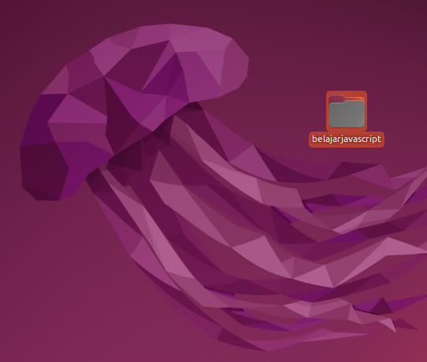

🚀 intinya: kita punya folder khusus buat nyimpen semua tentang belajar javascript.
Petualangan ini harusnya ga selesai dalam waktu sehari. Kalau kalian memang niat dan suka belajar JavaScript, kedepannya pasti akan banyak pertanyaan-pertanyaan. Ketika nanti kalian ngirim pertanyaan ke aku, aku harus tau kamu siapa dan udah belajar sejauh mana. Jadi harus ada catetan belajarnya.
Catetan ini bentuknya bebas. Saran dari aku gini:
Buat folder khusus
Buat folder khusus untuk petualangan JavaScript ini. Nama foldernya bebas. Contoh:
belajarjavascript atau petualangan-javascript
 

nanti semua yang ada hubungannya sama belajar javascript masukin situ biar fokus. biar keliatan juga progresnya.
"belajar ga ada gunanya kalau ga ada progres, progres ga ada gunanya kalau ga kerasa. biar progres bisa kerasa, minimal dicatet. bagus kalau catetannya bisa ditata yang rapi." - Faris, si tiba-tiba bikin quote